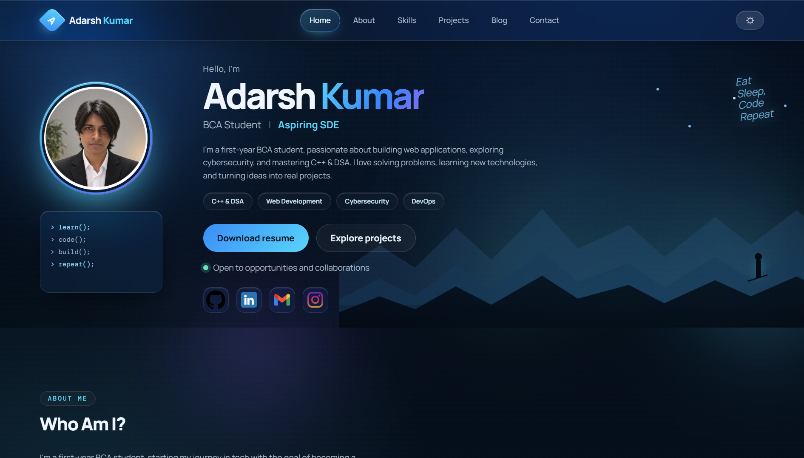
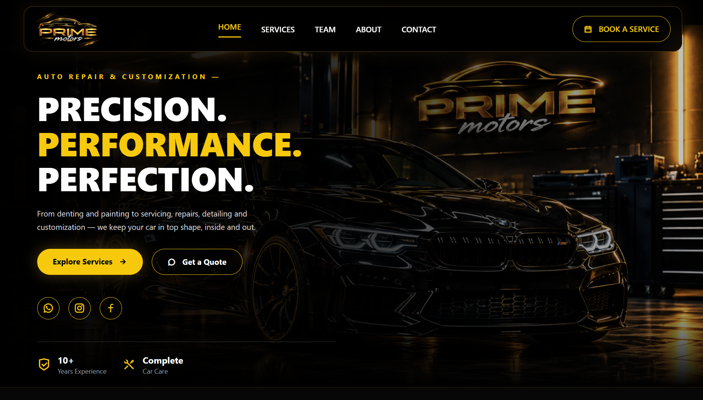
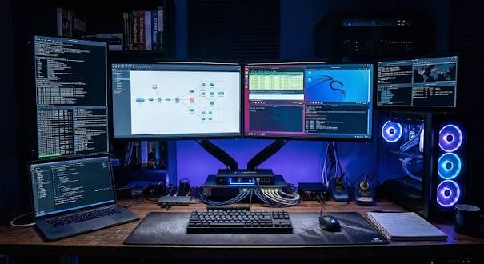

Technologies
Comfortable
- JavaScript
- HTML & CSS
- Tailwind CSS
- C
- C++
- Git & GitHub
Practising
- C++(DSA)
- OOPs
- Python
- React.js
- Express.js
- Node.js
- Linux
- Databases
Learning
- Docker
- CI/CD
- cybersecurity
Hello, I'm
BCA Student | Aspiring SDE
I'm a first-year BCA student, passionate about building web applications, exploring cybersecurity, and mastering C++ & DSA. I love solving problems, learning new technologies, and turning ideas into real projects.
Open to opportunities and collaborations
I'm a first-year BCA student, starting my journey in tech with the goal of becoming a Software Development Engineer (SDE). Right now, I'm focused on building strong fundamentals in C++ and Data Structures & Algorithms, while exploring Full Stack Web Development to strengthen both my problem-solving and practical skills.
I'm also deeply interested in cybersecurity, learning the basics of security, ethical hacking, and how systems can be protected against real-world threats.
💡 Always curious, always learning, and excited about the opportunities ahead.
Small steps
every day lead
to big results.
Grouped by what I use and how well I know it. Dashed outlines mark what I'm still learning.
A small app with real-world functionality, moving from plain HTML, CSS and JS towards React and a database.
Working through arrays, linked lists, trees and graphs, and writing up what I learn as notes below.
Linux and networking exercises that grow into ethical hacking and web security practice.
Containerise my projects and automate their tests and deploys, as a step towards DevSecOps.
2026 - Present
BRABU, Muzaffarpur
NYC, Beyond Sigma
Short Term Goal
C++(DSA) + Full stack Development + Cybersecurity
Long Term Goal

This website: a themeable, responsive page that shows my journey, skills and live GitHub activity.

A full-stack web application which is being built to change the honey market forever.

A simple yet useful website for a business that provides car related services.

Security tools, practical labs and real-world scenarios.
Loading repositories…
Short explanations of things I've just learned.
In most expressions an array name "decays" into a pointer to its first element. The exceptions are sizeof and &. So in main, sizeof(arr) returns the whole array's size in bytes.
A function parameter written as int arr[] is really int *arr. Inside the function, sizeof(arr) is the size of a pointer, typically 8 bytes on a 64-bit system. Pass the length as a separate argument instead.
A scroll listener runs on every scroll event, and reading layout inside it forces the browser to recalculate positions. IntersectionObserver tells you when an element enters or leaves the viewport, and the browser batches that work for you.
I use it on this site to highlight the current nav link and to reveal sections as they appear. Call unobserve once an element has revealed so it stops costing anything.
I'm always open to discussing opportunities, collaborations, or just tech in general. Feel free to reach out!